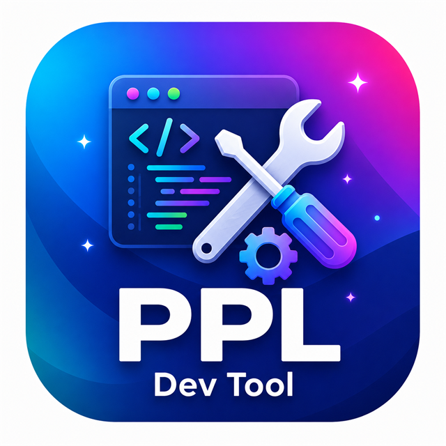
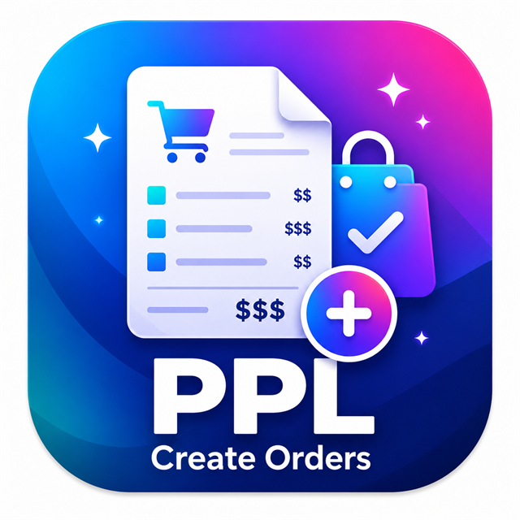
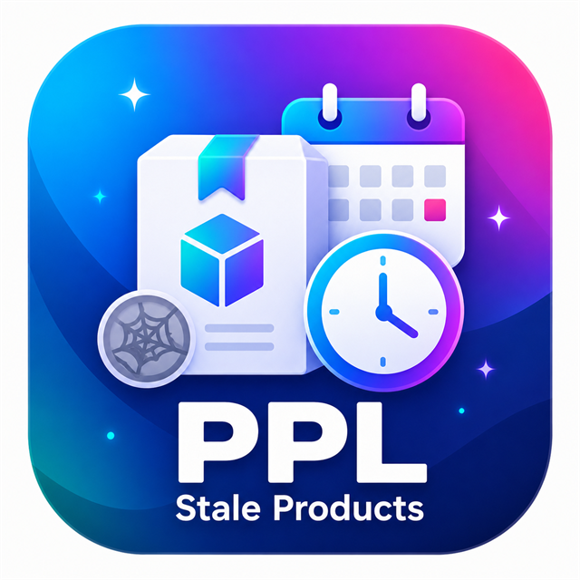

Included modules
The tools are split into a shared shell and separate data-generation modules.

Dev Tool
Shared admin hub, toolbar styling, navigation, search-term simulator and generated-data cleanup.

Dev Create Orders
Create seed orders for reports, search tests and admin checks.

Dev Create Customers
Create test customers for customer and order checks.
Dev Create Articles
Create test products and article-like catalog entries for storefront and search testing.
Dev Create Store
Prepare development store structures and demo setup data.
Safety model
Generated-data cleanup defaults to dry-run and production execution is blocked unless explicitly allowed.